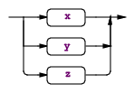
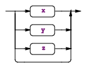
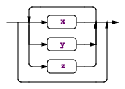
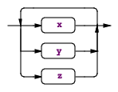

1. Parser Rules
Parsers consist of a set of parser rules either in a parser or a combined grammar. A Java application launches a parser by invoking the rule function, generated by ANTLR, associated with the desired start rule. The most basic rule is just a rule name followed by a single alternative terminated with a semicolon:
/** Javadoc comment can precede rule */
retstat : 'return' expr ';' ;
Rules can also have alternatives separated by the |
operator:
stat: retstat
| 'break' ';'
| 'continue' ';'
;
Alternatives are either a list of rule elements or empty. For example, here’s a rule with an empty alternative that makes the entire rule optional:
superClass
: 'extends' ID
| // empty means other alternative(s) are optional
;
1.1. Alternative Labels
As we saw in Section 7.4, Labeling Rule Alternatives for Precise Event Methods, we can get more precise parse-tree listener events by labeling the outermost alternatives of a rule using the # operator. All alternatives within a rule must be labeled, or none of them. Here are two rules with labeled alternatives.
grammar T;
stat: 'return' e ';' # Return
| 'break' ';' # Break
;
e : e '*' e # Mult
| e '+' e # Add
| INT # Int
;
Alternative labels do not have to be at the end of the line and there does not have to be a space after the # symbol. ANTLR generates a rule context class definition for each label. For example, here is the listener that ANTLR generates:
public interface AListener extends ParseTreeListener {
void enterReturn(AParser.ReturnContext ctx);
void exitReturn(AParser.ReturnContext ctx);
void enterBreak(AParser.BreakContext ctx);
void exitBreak(AParser.BreakContext ctx);
void enterMult(AParser.MultContext ctx);
void exitMult(AParser.MultContext ctx);
void enterAdd(AParser.AddContext ctx);
void exitAdd(AParser.AddContext ctx);
void enterInt(AParser.IntContext ctx);
void exitInt(AParser.IntContext ctx);
}
There are enter and exit methods associated with each labeled alternative. The parameters to those methods are specific to alternatives.
You can reuse the same label on multiple alternatives to indicate that the parse tree walker should trigger the same event for those alternatives. For example, here’s a variation on rule e from grammar A above:
e : e '*' e # BinaryOp
| e '+' e # BinaryOp
| INT # Int
;
ANTLR would generate the following listener methods for e:
void enterBinaryOp(AParser.BinaryOpContext ctx);
void exitBinaryOp(AParser.BinaryOpContext ctx);
void enterInt(AParser.IntContext ctx);
void exitInt(AParser.IntContext ctx);
ANTLR gives errors if an alternative name conflicts with a rule name. Here’s another rewrite of rule e where two alternative labels conflict with rule names:
e : e '*' e # e
| e '+' e # Stat
| INT # Int
;
The context objects generated from rule names and labels get capitalized and so label Stat conflicts with rule stat:
$ antlr4 A.g4
error(124): A.g4:5:23: rule alt label e conflicts with rule e
error(124): A.g4:6:23: rule alt label Stat conflicts with rule stat
warning(125): A.g4:2:13: implicit definition of token INT in parser
1.2. Rule Context Objects
ANTLR generates methods to access the rule context objects (parse tree nodes) associated with each rule reference. For rules with a single rule reference, ANTLR generates a method with no arguments. Consider the following rule.
inc : e '++' ;
ANTLR generates this context class:
public static class IncContext extends ParserRuleContext {
public EContext e() { ... } // return context object associated with e
...
}
ANTLR also provide support to access context objects when there is more than a single reference to a rule:
field : e '.' e ;
ANTLR generates a method with an index to access the ith element as well as a method to get context for all references to that rule:
public static class FieldContext extends ParserRuleContext {
public EContext e(int i) { ... } // get ith e context
public List<EContext> e() { ... } // return ALL e contexts
...
}
If we had another rule, s, that references field, an embedded action could access the list of e rule matches performed by field:
s : field
{
List<EContext> x = $field.ctx.e();
...
}
;
A listener or visitor could do the same thing. Given a pointer to a FieldContext object, f, f.e() would return List
1.3. Rule Element Labels
You can label rule elements using the = operator to add fields to the rule context objects:
stat: 'return' value=e ';' # Return
| 'break' ';' # Break
;
Here value is the label for the return value of rule e, which is defined elsewhere. Labels become fields in the appropriate parse tree node class. In this case, label value becomes a field in ReturnContext because of the Return alternative label:
public static class ReturnContext extends StatContext {
public EContext value;
...
}
It’s often handy to track a number of tokens, which you can do with the += “list label” operator. For example, the following rule creates a list of the Token objects matched for a simple array construct:
array : '{' el+=INT (',' el+=INT)* '}' ;
ANTLR generates a List field in the appropriate rule context class:
public static class ArrayContext extends ParserRuleContext {
public List<Token> el = new ArrayList<Token>();
...
}
These list labels also work for rule references:
elist : exprs+=e (',' exprs+=e)* ;
ANTLR generates a field holding the list of context objects:
public static class ElistContext extends ParserRuleContext {
public List<EContext> exprs = new ArrayList<EContext>();
...
}
1.4. Rule Elements
Rule elements specify what the parser should do at a given moment just like statements in a programming language. The elements can be rule, token, string literal like expression, ID, and ’return’. Here’s a complete list of the rule elements (we’ll look at actions and predicates in more detail later):
| Syntax | Description |
|---|---|
| T | Match token T at the current input position. Tokens always begin with a capital letter. |
| ’literal’ | Match the string literal at the current input position. A string literal is simply a token with a fixed string. |
| r | Match rule r at current input position, which amounts to invoking the rule just like a function call. Parser rule names always begin with a lowercase letter. |
| r [«args»] | Match rule r at current input position, passing in a list of arguments just like a function call. The arguments inside the square brackets are in the syntax of the target language and are usually a comma-separated list of expressions. |
| {«action»} | Execute an action immediately after the preceding alternative element and immediately before the following alternative element. The action conforms to the syntax of the target language. ANTLR copies the action code to the generated class verbatim, except for substituting attribute and token references such as $x and $x.y. |
| {«p»}? | Evaluate semantic predicate «p». Do not continue parsing past a predicate if «p» evaluates to false at runtime. Predicates encountered during prediction, when ANTLR distinguishes between alternatives, enable or disable the alternative(s) surrounding the predicate(s). |
| . | Match any single token except for the end of file token. The “dot” operator is called the wildcard. |
When you want to match everything but a particular token or set of tokens, use the ~ “not” operator. This operator is rarely used in the parser but is available. ~INT matches any token except the INT token. ~’,’ matches any token except the comma. ~(INT|ID) matches any token except an INT or an ID.
Token, string literal, and semantic predicate rule elements can take options. See Rule Element Options.
1.5. Subrules
A rule can contain alternative blocks called subrules (as allowed in Extended BNF Notation: EBNF). A subrule is like a rule that lacks a name and is enclosed in parentheses. Subrules can have one or more alternatives inside the parentheses. Subrules cannot define attributes with locals and returns like rules can. There are four kinds of subrules (x, y, and z represent grammar fragments):
| Syntax | Description |
|---|---|
|  | (x|y|z).
Match any alternative within the subrule exactly once. Example:
returnType : (type | 'void') ; |
|  | (x|y|z)?
Match nothing or any alternative within subrule. Example:
classDeclaration : 'class' ID (typeParameters)? ('extends' type)? ('implements' typeList)? classBody ; |
|  | (x|y|z)*
Match an alternative within subrule zero or more times. Example:
annotationName : ID ('.' ID)* ; |
|  | (x|y|z)+
Match an alternative within subrule one or more times. Example:
annotations : (annotation)+ ; |
You can suffix the ?, *, and + subrule operators with the nongreedy operator, which is also a question mark: ??, *?, and +?. See Section 15.6, Wildcard Operator and Nongreedy Subrules.
As a shorthand, you can omit the parentheses for subrules composed of a single alternative with a single rule element reference. For example, annotation+ is the same as (annotation)+ and ID+ is the same as (ID)+. Labels also work with the shorthand. ids+=INT+ make a list of INT token objects.
1.6. Catching Exceptions
When a syntax error occurs within a rule, ANTLR catches the exception, reports the error, attempts to recover (possibly by consuming more tokens), and then returns from the rule. Every rule is wrapped in a try/catch/finally statement:
void r() throws RecognitionException {
try {
rule-body
}
catch (RecognitionException re) {
_errHandler.reportError(this, re);
_errHandler.recover(this, re);
}
finally {
exitRule();
}
}
In Section 9.5, Altering ANTLR’s Error Handling Strategy, we saw how to use a strategy object to alter ANTLR’s error handling. Replacing the strategy changes the strategy for all rules, however. To alter the exception handling for a single rule, specify an exception after the rule definition:
r : ...
;
catch[RecognitionException e] { throw e; }
That example shows how to avoid default error reporting and recovery. r rethrows the exception, which is useful when it makes more sense for a higher-level rule to report the error. Specifying any exception clause, prevents ANTLR from generating a clause to handle RecognitionException.
You can specify other exceptions as well:
r : ...
;
catch[FailedPredicateException fpe] { ... }
catch[RecognitionException e] { ... }
The code snippets inside curly braces and the exception “argument” actions must be written in the target language; Java, in this case.
When you need to execute an action even if an exception occurs, put it into the finally clause:
r : ...
;
// catch blocks go first
finally { System.out.println("exit rule r"); }
The finally clause executes right before the rule triggers exitRule before returning. If you want to execute an action after the rule finishes matching the alternatives but before it does its cleanup work, use an after action.
Here’s a complete list of exceptions:
| Exception name | Description |
|---|---|
| RecognitionException | The superclass of all exceptions thrown by an ANTLR-generated recognizer. It’s a subclass of RuntimeException to avoid the hassles of checked exceptions. This exception records where the recognizer (lexer or parser) was in the input, where it was in the ATN (internal graph data structure representing the grammar), the rule invocation stack, and what kind of problem occurred. |
| NoViableAltException | Indicates that the parser could not decide which of two or more paths to take by looking at the remaining input. This exception tracks the starting token of the offending input and also knows where the parser was in the various paths when the error occurred. |
| LexerNoViableAltException | The equivalent of NoViableAltException but for lexers only. |
| InputMismatchException | The current input Token does not match what the parser expected. |
| FailedPredicateException | A semantic predicate that evaluates to false during prediction renders the surrounding alternative nonviable. Prediction occurs when a rule is predicting which alternative to take. If all viable paths disappear, parser will throw NoViableAltException. This predicate gets thrown by the parser when a semantic predicate evaluates to false outside of prediction, during the normal parsing process of matching tokens and calling rules. |
1.7. Rule Attribute Definitions
There are a number of action-related syntax elements associated with rules to be aware of. Rules can have arguments, return values, and local variables just like functions in a programming language. (Rules can have actions embedded among the rule elements, as we’ll see in Section 15.4, Actions and Attributes.) ANTLR collects all of the variables you define and stores them in the rule context object. These variables are usually called attributes. Here’s the general syntax showing all possible attribute definition locations:
rulename[args] returns [retvals] locals [localvars] : ... ;
The attributes defined within those [...] can be used like any other variable. Here is a sample rule that copies parameters to return values:
// Return the argument plus the integer value of the INT token
add[int x] returns [int result] : '+=' INT {$result = $x + $INT.int;} ;
The args, locals, and return [...] are generally in the target language but with some constraints. The [...] string is a comma-separated list of declarations either with prefix or postfix type notation or no-type notation. The elements can have initializer such as [int x = 32, float y] but don't go too crazy as we are parsing this generic text manually in ScopeParser.
- Java, CSharp, C++ use
int xnotation but C++ must use a slightly altered notation for array references,int[] x, to fit in the type id syntax. - Go and Swift give the type after the variable name, but Swift requires a
:in between. Goi int, Swifti:int. For Go target, you must either useint iori:int. - Python and JavaScript don't specify static types so actions are just identifier lists such as
[i,j].
Technically any target could use either notation. For examples, see TestScopeParsing.
As with the grammar level, you can specify rule-level named actions. For rules, the valid names are init and after. As the names imply, parsers execute init actions immediately before trying to match the associated rule and execute after actions immediately after matching the rule. ANTLR after actions do not execute as part of the finally code block of the generated rule function. Use the ANTLR finally action to place code in the generated rule function finally code block.
The actions come after any argument, return value, or local attribute definition actions. The row rule preamble from Section 10.2, Accessing Token and Rule Attributes illustrates the syntax nicely:
actions/CSV.g4
/** Derived from rule "row : field (',' field)* '\r'? '\n' ;" */
row[String[] columns]
returns [Map<String,String> values]
locals [int col=0]
@init {
$values = new HashMap<String,String>();
}
@after {
if ($values!=null && $values.size()>0) {
System.out.println("values = "+$values);
}
}
: ...
;
Rule row takes argument columns, returns values, and defines local variable col. The “actions” in square brackets are copied directly into the generated code:
public class CSVParser extends Parser {
...
public static class RowContext extends ParserRuleContext {
public String [] columns;
public Map<String,String> values;
public int col=0;
...
}
...
}
The generated rule functions also specify the rule arguments as function arguments, but they are quickly copied into the local RowContext object:
public class CSVParser extends Parser {
...
public final RowContext row(String [] columns) throws RecognitionException {
RowContext _localctx = new RowContext(_ctx, 4, columns);
enterRule(_localctx, RULE_row);
...
}
...
}
ANTLR tracks nested [...] within the action so that String[] columns is parsed properly. It also tracks angle brackets so that commas within generic type parameters do not signify the start of another attribute. Map<String,String> values is one attribute definition.
There can be multiple attributes in each action, even for return values. Use a comma to separate attributes within the same action:
a[Map<String,String> x, int y] : ... ;
ANTLR interprets that action to define two arguments, x and y:
public final AContext a(Map<String,String> x, int y)
throws RecognitionException
{
AContext _localctx = new AContext(_ctx, 0, x, y);
enterRule(_localctx, RULE_a);
...
}
1.8. Start Rules and EOF
A start rule is the rule engaged first by the parser; it’s the rule function called by the language application. For example, a language application that parsed to Java code might call parser.compilationUnit() for a JavaParser object called parser. Any rule in the grammar can act as a start rule.
Start rules don’t necessarily consume all of the input. They consume only as much input as needed to match an alternative of the rule. For example, consider the following rule that matches one, two, or three tokens, depending on the input.
s : ID
| ID '+'
| ID '+' INT
;
Upon a+3, rule s matches the third alternative. Upon a+b, it matches the second alternative and ignores the final b token. Upon a b, it matches the first alternative, ignoring the b token. The parser does not consume the complete input in the latter two cases because rule s doesn’t explicitly say that end of file must occur after matching an alternative of the rule.
This default functionality is very useful for building things like IDEs. Imagine the IDE wanting to parse a method somewhere in the middle of a big Java file. Calling rule methodDeclaration should try to match just a method and ignore whatever comes next.
On the other hand, rules that describe entire input files should reference special predefined-token EOF. If they don’t, you might scratch your head for a while wondering why the start rule doesn’t report errors for any input no matter what you give it. Here’s a rule that’s part of a grammar for reading configuration files:
config : element*; // can "match" even with invalid input.
Invalid input would cause config to return immediately without matching any input and without reporting an error. Here’s the proper specification:
file : element* EOF; // don't stop early. must match all input